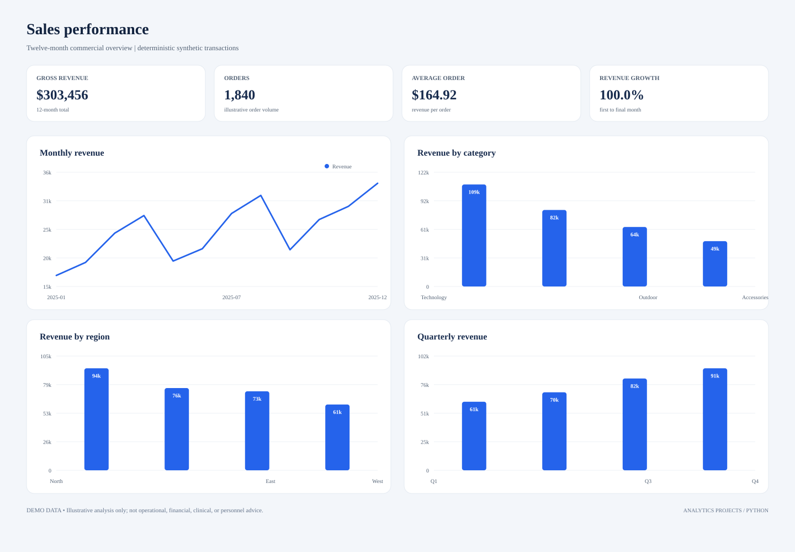
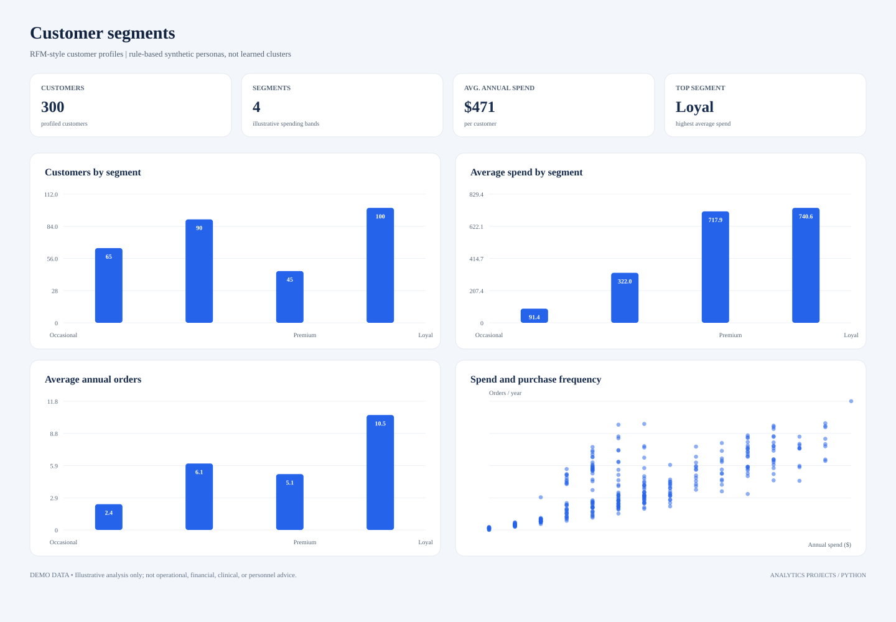
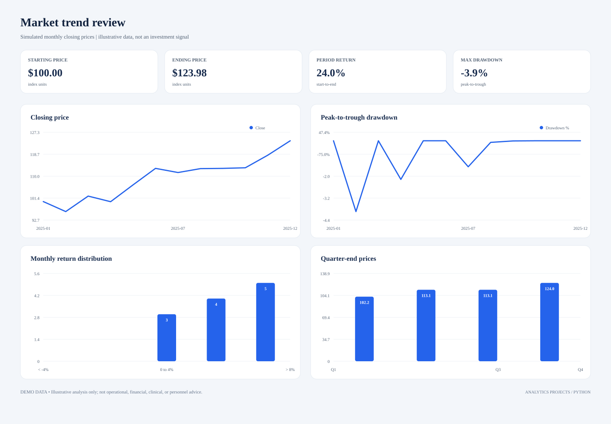
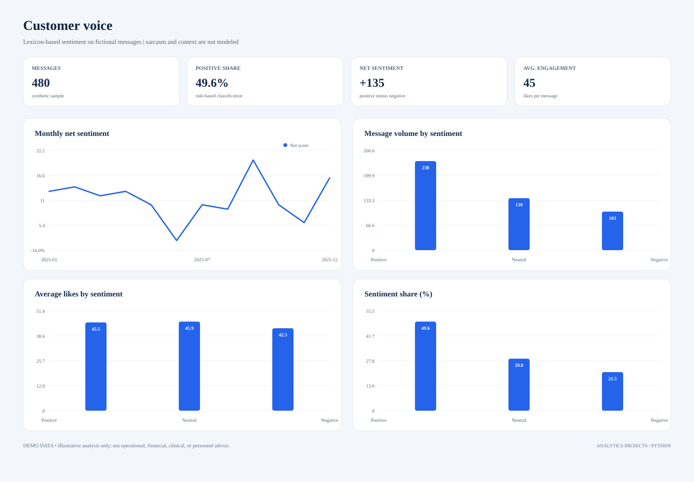
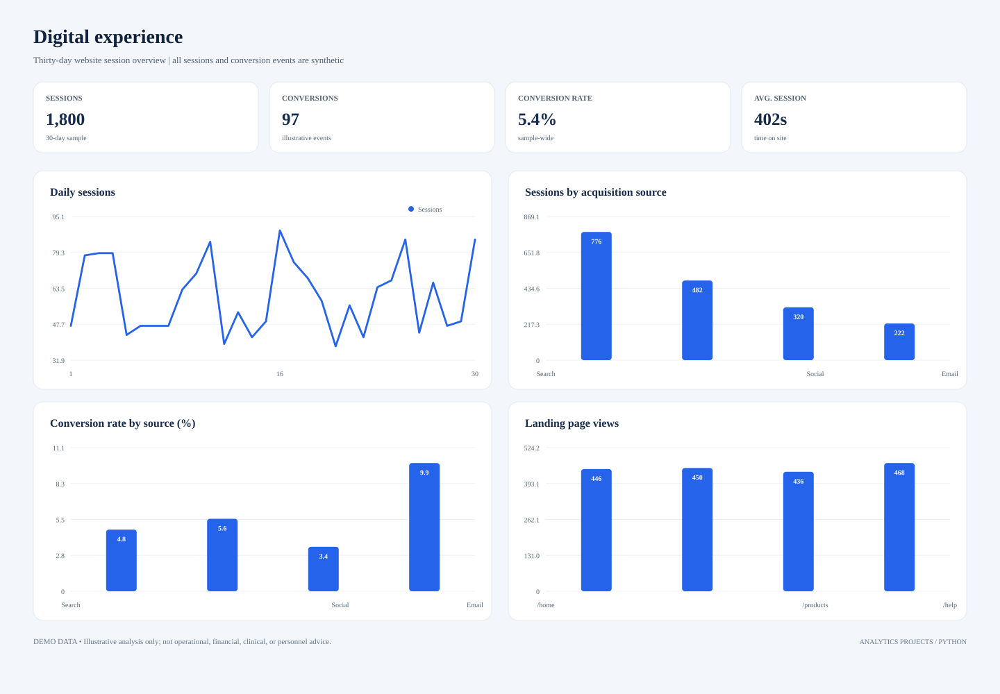
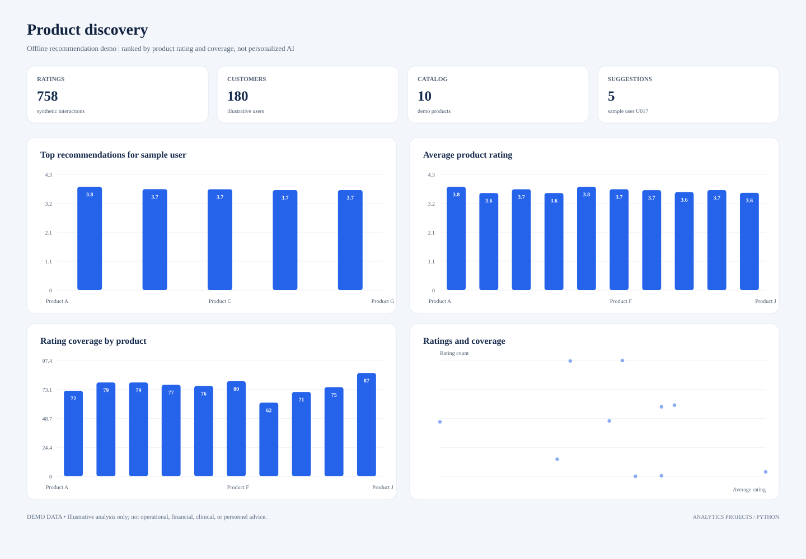
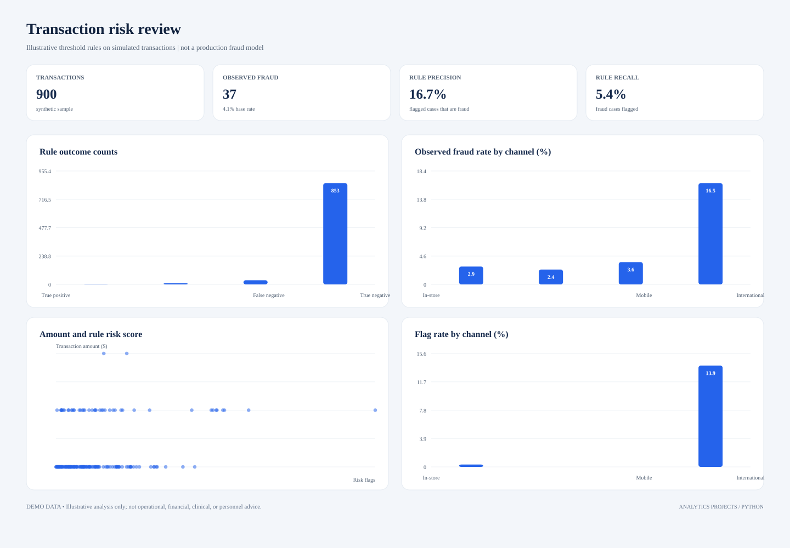
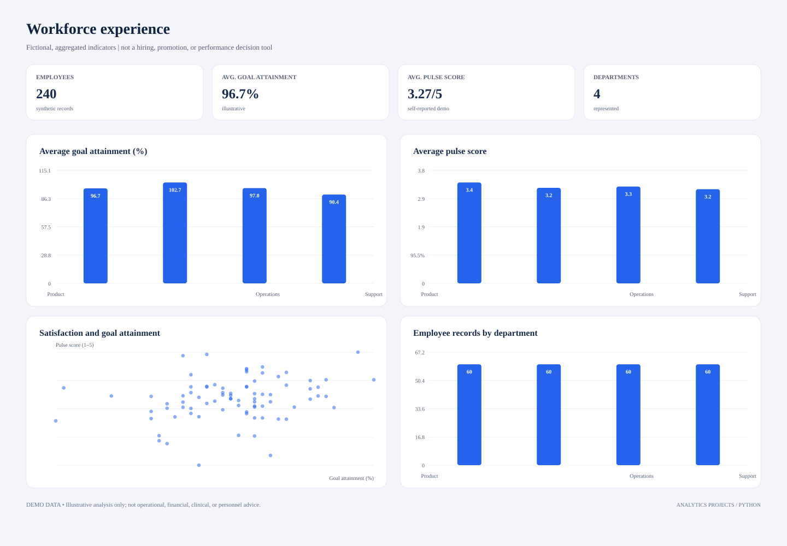

01 · Sales performance

Ten focused data projects · Python analysis · rendered dashboards










All data is deterministic and synthetic for demonstration. See the project guide for code and run instructions.